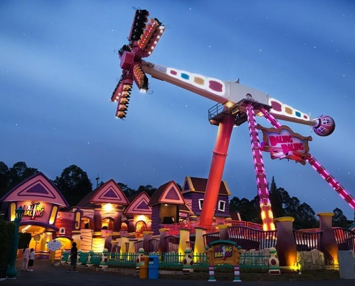

| Gambar | Nama Objek Wisata | Lokasi | Deskripsi |
|---|---|---|---|
| Museum Fatahillah | Museum bersejarah indonesia yang berlokasi di Kota Tua, Jakarta Kota | ||
|  | Dufan | Wahana taman bermain yang mengasyikan, juga berdekatan dengan pantai Ancol | |
| Monas | Monumen Nasional atau yang disingkat dengan Monas atau Tugu Monas adalah monumen peringatan setinggi 132 meter (433 kaki) yang terletak tepat di tengah Lapangan Medan Merdeka, Jakarta Pusat. |